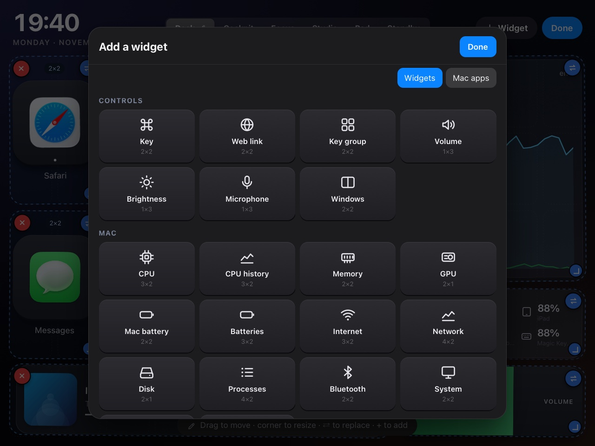

Six modes. Any layout.
OldPadDeck ships with six ready-made modes, and every one of them is just a starting point: a grid of widgets you can rearrange however you like.

Your keys, one tap away.
App keys with their real icons, a screenshot key, now playing, the volume, your internet speed and the batteries of everything on your desk.
- Keys do anything: open an app, a website or a Shortcut, send a key combo, type a snippet.
- Real icons: app keys use the Mac's own app icons, website keys the site's icon.
- Batteries at a glance: Mac, AirPods and their case, iPhone, iPad, Magic Mouse and Keyboard.

Your Mac's vital signs.
Everything Activity Monitor knows, on a screen you don't have to switch to, refreshed every second.
- CPU per core, performance and efficiency cores in their own colours.
- Memory pressure, Mac battery health and cycles, power in watts.
- Temperatures and fans: CPU, GPU, battery, fan speed and power draw.
- Top processes: a stable list that doesn't jump around. Long-press one to quit it.

Work in sprints.
A Pomodoro timer that does more than count: it can switch on Do Not Disturb for the length of a session and tell you when it's over.
- Pomodoro with the session length you choose, optional breaks, and daily focus time.
- Today's reminders and calendar, checked off right from the iPad.
- The iPad follows: start a session and it jumps to Focus by itself.

Music and sound, hands off the Mac.
Big artwork, transport controls, volume and microphone sliders, and the audio output list.
- Music or Spotify: whichever is playing, or launches the one you prefer.
- Every output in one list: built-in, displays, USB, Bluetooth and AirPlay speakers.
- Mic slider and mute for calls and recording.

A trackpad and a keyboard.
Drive the Mac from the couch, or keep your hands where they are.
- Trackpad with tap to click and two-finger scroll.
- Shortcut keys: copy, paste, undo, app switcher, or any combo you set.
- Type or dictate text on the iPad and send it to the Mac.

Calm when you're away.
After 10 idle minutes, the iPad switches to a large clock with the weather and a few numbers. One touch brings you back.
- Weather for the city you choose, from Open-Meteo.
- Transparent widgets so the clock floats on the background.
Build your own screens.
Tap ✎, then + Widget. Pick from the catalog, or from your Mac's apps to make a key in one tap. Every widget can be moved, resized, replaced or deleted, with undo.

Controls
- 2×2KeyOne big key: app, website, Shortcut, key combo, text, or a toggle.
- 2×2Web linkA key that opens a site, with its icon.
- 2×2Key groupSeveral keys in one widget, laid out to fit.
- 1×3Volume, Brightness, MicrophoneSliders, not buttons.
- 2×2WindowsTile the front window: halves, quarters, thirds, maximise, centre.
Mac
- 3×2CPU · CPU historyPer core, or over time.
- 2×2Memory · GPU · DiskPressure ring, usage, free space.
- 3×2Internet · NetworkSpeed and a live graph.
- 4×2Processes · Vital signsTop apps; temperatures and fans.
- 2×1Power draw · SystemWatts, uptime, thermal state.
- 3×2Mac battery · Batteries · BluetoothEvery device on your desk.
Media
- 4×1Now playingArtwork, title, progress, controls.
- 2×1Media controlsPrevious, play/pause, next.
- 2×2Audio outputMac outputs, Bluetooth and AirPlay speakers.
Focus
- 3×3PomodoroSessions, breaks, optional Do Not Disturb.
- 3×3Calendar · RemindersToday's events, or a checklist.
- 2×1Focus timeHow long you've focused today.
Ambient
- 3×2ClockFrom a corner clock to the whole screen.
- WeatherNow, high and low, for your city.
Input
- TrackpadMove, click, two-finger scroll.
- Text inputType or dictate, then send to the Mac.
Sizes are the default, in grid cells. Most widgets resize from one cell to the whole screen.
What a key can do.
Open things
An app (with its real icon), a website (with its icon), or one of your Shortcuts.
Press keys
Any combo, like ⌘ ⇧ 4, or type a saved snippet of text.
Toggle the Mac
Dark mode, keep awake, Do Not Disturb, lock, sleep the display, take a screenshot, dictate.